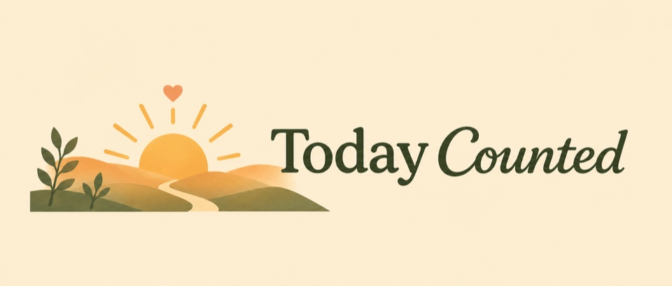
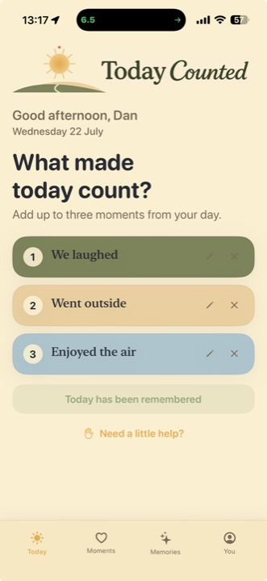
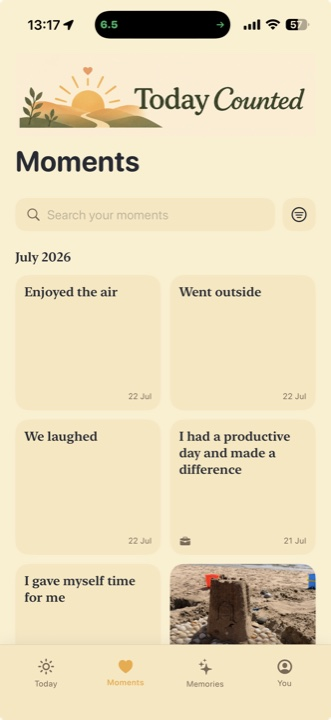
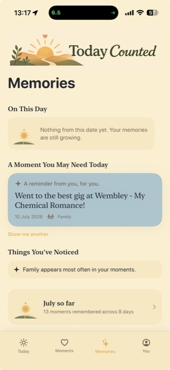
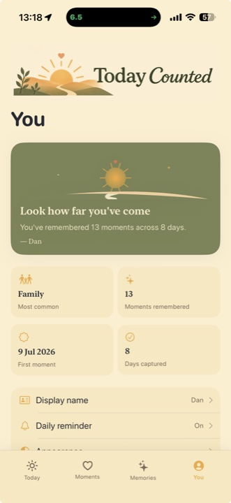

Notice
Pause for a moment and name something from your day.
A gentle daily ritual
Capture the small things that made today count, then watch them grow into reflections, memories and a story that feels like yours.
Private by design · No account · No adverts

A little space for every day
Nothing needs to be extraordinary. A nice cup of tea, making someone laugh, getting outside or simply making it through can all count.
Pause for a moment and name something from your day.
Add a category, mood or photo if it helps tell the story.
Return to your moments through gentle memories and reflections.
Made for reflection, not performance




Everything your moments need
Search, browse and favourite the parts of life you want to hold onto.
Revisit On This Day moments, monthly reflections and your Year in Moments.
Add context without turning reflection into another task to complete.
See today’s progress and return to the ritual with a single tap.
Create a beautiful keepsake whenever you choose, ready to save or share.
Add another layer of privacy and hide your content in the app switcher.
Private by design
Your entries and photos are stored locally on your device. There is no Today Counted account, no developer-run content server, no advertising and no usage tracking.
Read the full Privacy PolicyTry it in your own time
Starting the introduction is free and does not begin a paid subscription.
Up to three moments each day, with the whole app available.
Keep the ritual going while every other feature remains available.
A six-month auto-renewing subscription is required for continued access.
Subscriptions renew automatically every six months unless cancelled at least 24 hours before the end of the current period. Manage or cancel anytime in your Apple Account settings.
Need a little help?
For questions, feedback or help with Today Counted, open a support request and describe what you’re seeing.
Today can count